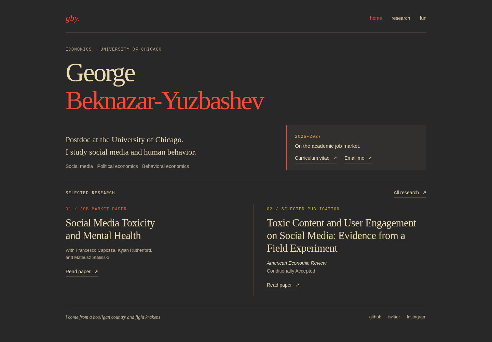
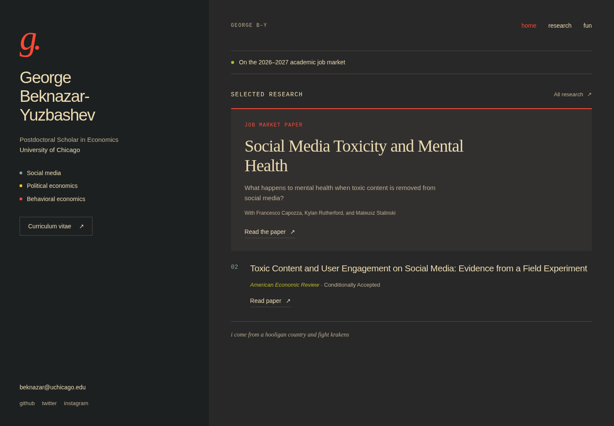
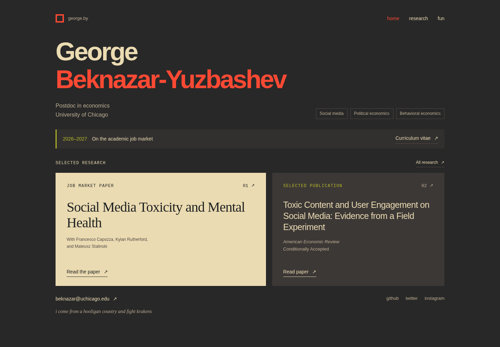

George Beknazar-Yuzbashev / Homepage studies
Same character. More presence.
Three directions for the 2026–2027 job market. Each keeps the warmth of Gruvbox Dark, gives your research a clear hierarchy, and leaves room for a little personality.

01Editorial
A literary, spacious composition. A large serif name anchors the page; fine rules and a small job-market panel establish structure. The two papers sit side by side.
Choose this for: a quiet, distinctive academic presence. The papers receive almost equal visual weight.
Explore Editorial ↗

02Split profile
Recommended
Your identity, CV, and contact details have their own column. Research leads the other: one featured job-market paper, followed by the AER paper and its status.
Choose this for: the clearest job-market hierarchy. On phones, the profile stacks above the research.
Explore Split profile ↗

03Folio
A bolder graphic direction. A cream paper panel against the charcoal background makes the JMP the immediate focal point. Strong sans-serif type keeps the page direct.
Choose this for: more visual impact and a memorable first screen. The light panel makes this the least subdued option.
Explore Folio ↗
What needed fixing
The current page gives nearly everything the same size, spacing, and emphasis. Affiliation, personality, job-market status, and research blur together. These proposals use deliberate differences in scale, space, and surface color to make the page easier to scan.
Across all three
Visible CV and email links. A clearly labeled job-market paper. The full AER title and “Conditionally Accepted” status. Your personal line and social links. Responsive layouts, keyboard focus indicators, and no external font or image dependencies.